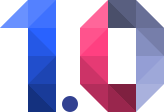
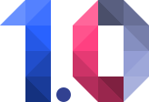

A simple Polymer based Web Component wrapper for the HTML5 full screen API
Make the most of Polymer's 'neon-animated-pages' effortlessly. NeonPageBehavior fires events allowing more control over a page's lifecycle, and allows your page element to use a different animation-configuration when transitioning to each different page
Polymer 0.5
A simple Polymer based Web Component wrapper for the HTML5 full screen API
A Polymer based Web-Component helping you to display a splash screen while your own Web-Component is getting ready
A Polymer mixin that gives you more control over the lifecycle of the children of your core-selector, and core-animated-pages in particular
Simple Web App built with Web Components and Polymer 0.5
 

The Polymer library is designed to make it easier and faster for developers to create great, reusable components for the modern web
A composable suite of objects and elements to make routing with web components a breeze
<github-card> with Polymer
A simple Polymer based Web Component wrapper for the HTML5 full screen API